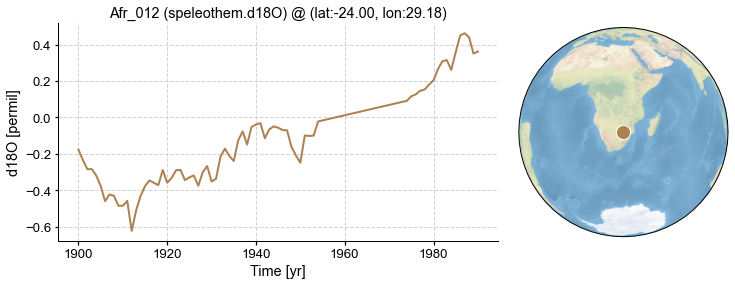
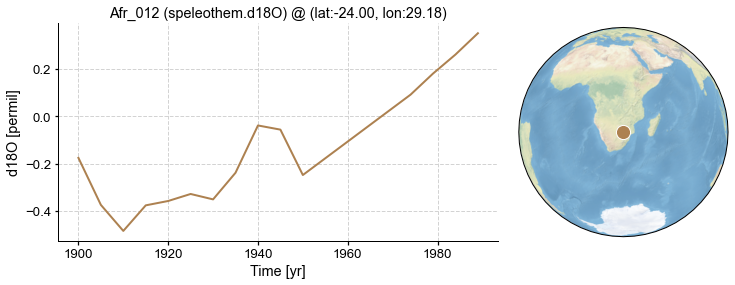

Basic Operations
Contents
Basic Operations#
In this tutorial, we introduce the basic operations of proxies with cfr.
[1]:
%load_ext autoreload
%autoreload 2
import cfr
import pandas as pd
Load the PAGES2k network stored in a pandas DataFrame#
[2]:
df = pd.read_pickle('./data/pages2k_dataset.pkl')
df.columns
[2]:
Index(['paleoData_pages2kID', 'dataSetName', 'archiveType', 'geo_meanElev',
'geo_meanLat', 'geo_meanLon', 'year', 'yearUnits',
'paleoData_variableName', 'paleoData_units', 'paleoData_values',
'paleoData_proxy'],
dtype='object')
Create a ProxyDatabase and load from the pandas DataFrame#
[3]:
pdb = cfr.ProxyDatabase().from_df(df)
pdb
[3]:
<cfr.proxy.ProxyDatabase at 0x104d16250>
Once the ProxyDatabase is created, we have ProxyDatabase.records as a dictionary of ProxyRecord.
[4]:
i = 0
for pid, pobj in pdb.records.items():
print(pid, pobj)
i += 1
if i >= 5:
break
NAm_153 <cfr.proxy.ProxyRecord object at 0x104cbd6d0>
Asi_245 <cfr.proxy.ProxyRecord object at 0x104d16490>
NAm_165 <cfr.proxy.ProxyRecord object at 0x104d16340>
Asi_178 <cfr.proxy.ProxyRecord object at 0x104d162b0>
Asi_174 <cfr.proxy.ProxyRecord object at 0x104d16760>
Slice a ProxyDatabase by index#
When the index is a slice, we get a subset of the ProxyDatabase:
[7]:
fig, ax = pdb[4:10].plot()

When the index is an int, we get a ProxyRecord instead:
[8]:
fig, ax = pdb[100].plot()

When the index is a proxy ID in str, we get a ProxyRecord as well:
[12]:
fig, ax = pdb['Ocn_065'].plot()

Slice a ProxyRecord#
[14]:
pobj = pdb.records['Afr_012']
fig, ax = pobj.plot()

We may slice the record using the slice() method:
[15]:
fig, ax = pobj.slice([1900, 1990]).plot()

We may also use index to slice the ProxyRecord:
[34]:
fig, ax = pobj[list(pobj.time).index(1900):list(pobj.time).index(1990)+1].plot()

We may also use a slice with str to indicate a specific year range:
[33]:
fig, ax = pobj['1900':'1990'].plot()

… or even add a step:
[37]:
fig, ax = pobj['1900':'1990':'5'].plot()
fig, ax = pobj['1900':'1990':5].plot()


Add several ProxyRecords together to form a ProxyDatabase#
[8]:
pdb_sub = pdb.records['NAm_153'] + pdb.records['Afr_005']
pdb_sub.records
[8]:
{'NAm_153': <cfr.proxy.ProxyRecord at 0x14b04a7f0>,
'Afr_005': <cfr.proxy.ProxyRecord at 0x14ae25550>}
Add a list of ProxyRecords into an existing ProxyDatabase#
[9]:
pobj_list = list(pdb.records.values())[:5]
pdb_sub = cfr.ProxyDatabase()
for pobj in pobj_list:
pdb_sub += pobj
pdb_sub.records
[9]:
{'NAm_153': <cfr.proxy.ProxyRecord at 0x14b0c3b50>,
'Asi_245': <cfr.proxy.ProxyRecord at 0x14b0c3c70>,
'NAm_165': <cfr.proxy.ProxyRecord at 0x14b0da3d0>,
'Asi_178': <cfr.proxy.ProxyRecord at 0x14b0da730>,
'Asi_174': <cfr.proxy.ProxyRecord at 0x12f935190>}
Merge several ProxyDatabases#
[10]:
pdb_sub1 = cfr.ProxyDatabase()
pobj_list = list(pdb.records.values())[:5]
pdb_sub1 += pobj_list
pdb_sub2 = cfr.ProxyDatabase()
pobj_list = list(pdb.records.values())[10:15]
pdb_sub2 += pobj_list
pdb_sub = pdb_sub1 + pdb_sub2
pdb_sub.records
[10]:
{'NAm_153': <cfr.proxy.ProxyRecord at 0x14b0e9730>,
'Asi_245': <cfr.proxy.ProxyRecord at 0x14b0e9820>,
'NAm_165': <cfr.proxy.ProxyRecord at 0x14b0e9f70>,
'Asi_178': <cfr.proxy.ProxyRecord at 0x14afb7eb0>,
'Asi_174': <cfr.proxy.ProxyRecord at 0x14afb7760>,
'NAm_102': <cfr.proxy.ProxyRecord at 0x108dc5a60>,
'NAm_046': <cfr.proxy.ProxyRecord at 0x108dc5ca0>,
'Ocn_065': <cfr.proxy.ProxyRecord at 0x108dc5f70>,
'Asi_242': <cfr.proxy.ProxyRecord at 0x12f98a940>,
'Asi_170': <cfr.proxy.ProxyRecord at 0x12f98a9a0>}
Substract a list of ProxyRecords from a ProxyDatabase#
[11]:
pdb_left = pdb_sub - pdb_sub1
pdb_left.records
[11]:
{'NAm_102': <cfr.proxy.ProxyRecord at 0x14b0e9cd0>,
'NAm_046': <cfr.proxy.ProxyRecord at 0x14b0e9970>,
'Ocn_065': <cfr.proxy.ProxyRecord at 0x14b0e97c0>,
'Asi_242': <cfr.proxy.ProxyRecord at 0x14b0e9940>,
'Asi_170': <cfr.proxy.ProxyRecord at 0x14ae92640>}
If the ProxyRecord to remove does not exist, a warning will prompt.
[12]:
pdb_left = pdb_sub - pdb.records['Ocn_001'] - pdb.records['NAm_153']
pdb_left.records
>>> Subtracting Ocn_001 failed.
[12]:
{'Asi_245': <cfr.proxy.ProxyRecord at 0x14b0f7310>,
'NAm_165': <cfr.proxy.ProxyRecord at 0x14b0f73a0>,
'Asi_178': <cfr.proxy.ProxyRecord at 0x14b0f7430>,
'Asi_174': <cfr.proxy.ProxyRecord at 0x14b0f74c0>,
'NAm_102': <cfr.proxy.ProxyRecord at 0x14b0f7550>,
'NAm_046': <cfr.proxy.ProxyRecord at 0x14b0f75e0>,
'Ocn_065': <cfr.proxy.ProxyRecord at 0x14b0f7670>,
'Asi_242': <cfr.proxy.ProxyRecord at 0x14b0f7700>,
'Asi_170': <cfr.proxy.ProxyRecord at 0x14b0f7790>}
Substract a ProxyDatabase from another#
[13]:
pdb_right = pdb_sub - pdb_left
pdb_right.records
[13]:
{'NAm_153': <cfr.proxy.ProxyRecord at 0x14af4aac0>}
Filter a ProxyDatabase#
[14]:
# by proxy type
pdb_TRW = pdb.filter(by='ptype', keys=['tree.TRW', 'coral.d18O'])
fig, ax = pdb_TRW.plot(plot_count=False)
pdb_TRW = pdb.filter(by='ptype', keys=['d18O'])
fig, ax = pdb_TRW.plot(plot_count=False)


[14]:
# by proxy id
pdb_NAm = pdb.filter(by='pid', keys=['NAm_153', 'NAm_154'])
fig, ax = pdb_NAm.plot(plot_count=False)
pdb_NAm_Asi = pdb.filter(by='pid', keys=['NAm', 'Asi'])
fig, ax = pdb_NAm_Asi.plot(plot_count=False)


[15]:
# by latitude
pdb_sub = pdb.filter(by='lat', keys=[10, 45])
fig, ax = pdb_sub.plot(plot_count=False)

[16]:
# by longitude
pdb_sub = pdb.filter(by='lon', keys=[100, 145])
fig, ax = pdb_sub.plot(plot_count=False)

[17]:
# by location in a square
pdb_sub = pdb.filter(by='loc-square', keys=[10, 45, 100, 145])
fig, ax = pdb_sub.plot(plot_count=False)

[18]:
# by location in a circle
pdb_sub = pdb.filter(by='loc-circle', keys=[15, 100, 3000])
fig, ax = pdb_sub.plot(plot_count=False)

[19]:
# by tag
# make tags
for pid, pobj in pdb.records.items():
if 'NAm' in pid:
pobj.tags = ['selected N']
pdb_sub = pdb.filter(by='tag', keys=['selected N'])
fig, ax = pdb_sub.plot(plot_count=False)

[20]:
# combination
pdb_sub = pdb.filter(by='pid', keys=['NAm', 'Asi']).filter(by='ptype', keys=['tree.TRW', 'tree.MXD']).filter(by='lat', keys=[10, 45])
fig, ax = pdb_sub.plot(plot_count=False)

Convert a ProxyRecord to an xarray.DataArray#
[21]:
da = pdb.records['NAm_153'].to_da()
da
[21]:
<xarray.DataArray 'NAm_153' (time: 434)>
array([0.883, 0.942, 1.043, 0.945, 1.141, 0.715, 0.693, 0.63 , 0.662,
0.667, 0.668, 0.645, 0.711, 0.943, 0.735, 0.717, 0.788, 0.756,
0.79 , 0.668, 0.711, 0.858, 0.84 , 0.827, 0.914, 1.001, 0.964,
0.994, 1.058, 1.055, 1.187, 1.111, 1.064, 1.071, 0.862, 0.956,
1.168, 1.085, 0.948, 0.949, 1.149, 1.197, 1.345, 0.981, 1.185,
1.107, 1.071, 1.15 , 0.894, 1.157, 1.068, 1.201, 0.968, 0.906,
0.98 , 0.954, 0.829, 0.863, 0.999, 1.034, 0.984, 0.79 , 0.776,
0.868, 0.767, 0.801, 0.887, 0.856, 0.701, 0.924, 1.247, 1.28 ,
1.257, 1.192, 1.182, 0.924, 0.864, 0.825, 0.907, 0.766, 0.828,
0.768, 0.728, 0.932, 1.212, 1.076, 0.975, 0.629, 0.497, 0.739,
0.56 , 0.675, 0.648, 0.8 , 0.829, 0.797, 0.956, 0.925, 0.943,
0.861, 0.853, 0.755, 0.717, 0.714, 0.813, 0.95 , 0.926, 0.831,
0.903, 1.092, 1.075, 1.274, 1.089, 1.038, 1.118, 1.028, 1.165,
1.258, 1.153, 0.995, 1.061, 1.02 , 0.95 , 0.754, 0.833, 0.852,
1.05 , 0.919, 0.962, 1.006, 0.81 , 0.652, 0.787, 0.779, 0.741,
1.012, 0.656, 1.047, 0.639, 0.778, 0.835, 0.776, 1.212, 1.261,
1.229, 1.203, 1.123, 1.515, 1.422, 1.175, 1.466, 1.401, 1.198,
1.222, 1.156, 1.215, 1.001, 0.814, 0.891, 0.939, 0.75 , 0.851,
0.737, 0.871, 0.789, 0.688, 0.748, 0.931, 0.821, 0.961, 0.995,
1.126, 0.892, 1.096, 0.921, 1.061, 0.937, 0.917, 1.051, 0.983,
...
0.64 , 1.013, 1.002, 0.834, 0.963, 1.057, 1.13 , 0.905, 0.851,
1.018, 1.053, 1.128, 0.709, 0.809, 0.778, 1.119, 0.954, 0.883,
0.987, 0.863, 0.659, 0.875, 0.678, 0.846, 0.952, 0.725, 0.875,
0.766, 0.893, 0.706, 0.707, 0.897, 0.767, 0.939, 0.877, 0.987,
0.83 , 0.913, 1.086, 1.22 , 0.823, 1.082, 1.108, 0.834, 1.083,
0.945, 0.859, 1.009, 0.862, 0.65 , 0.683, 0.81 , 0.683, 0.708,
0.881, 0.945, 1.002, 0.862, 0.981, 0.892, 0.875, 0.95 , 1.174,
0.891, 0.853, 0.79 , 1.052, 1.166, 1.031, 0.821, 1.081, 1.024,
1.008, 1.056, 1.103, 0.893, 0.864, 0.922, 0.884, 1.025, 1.107,
0.841, 1.042, 0.895, 0.953, 0.882, 0.902, 1.035, 1.018, 1.079,
1.115, 0.979, 1.049, 0.846, 0.605, 0.633, 0.733, 0.705, 0.917,
0.888, 0.888, 1.146, 1.277, 1.075, 1.166, 0.912, 1.048, 1.002,
1.015, 1.259, 1.114, 1.272, 1.304, 1.215, 1.246, 0.962, 1.277,
1.211, 1.08 , 1.055, 1.192, 1.144, 0.972, 1.026, 1.329, 1.046,
1.386, 1.073, 1.028, 0.898, 1.039, 1.08 , 0.769, 0.787, 1.145,
1.021, 1.091, 1.027, 0.766, 1.064, 1.146, 1.324, 1.072, 1.278,
1. , 1.316, 1.384, 0.788, 0.896, 1.151, 0.936, 1.239, 0.867,
1.163, 1.286, 1.272, 1.057, 1.205, 1.271, 1.266, 1.409, 1.371,
1.238, 1.338, 1.248, 1.173, 1.204, 0.947, 0.967, 1.019, 1.2 ,
1.093, 1.346])
Coordinates:
* time (time) object 1563-01-01 00:00:00 ... 1996-01-01 00:00:00
Attributes:
lat: 52.7
lon: 241.7
ptype: tree.TRW
dt: 1.0
time_name: Time
time_unit: yr
value_name: trsgi
value_unit: NAxarray.DataArray
'NAm_153'
- time: 434
- 0.883 0.942 1.043 0.945 1.141 0.715 ... 0.967 1.019 1.2 1.093 1.346
array([0.883, 0.942, 1.043, 0.945, 1.141, 0.715, 0.693, 0.63 , 0.662, 0.667, 0.668, 0.645, 0.711, 0.943, 0.735, 0.717, 0.788, 0.756, 0.79 , 0.668, 0.711, 0.858, 0.84 , 0.827, 0.914, 1.001, 0.964, 0.994, 1.058, 1.055, 1.187, 1.111, 1.064, 1.071, 0.862, 0.956, 1.168, 1.085, 0.948, 0.949, 1.149, 1.197, 1.345, 0.981, 1.185, 1.107, 1.071, 1.15 , 0.894, 1.157, 1.068, 1.201, 0.968, 0.906, 0.98 , 0.954, 0.829, 0.863, 0.999, 1.034, 0.984, 0.79 , 0.776, 0.868, 0.767, 0.801, 0.887, 0.856, 0.701, 0.924, 1.247, 1.28 , 1.257, 1.192, 1.182, 0.924, 0.864, 0.825, 0.907, 0.766, 0.828, 0.768, 0.728, 0.932, 1.212, 1.076, 0.975, 0.629, 0.497, 0.739, 0.56 , 0.675, 0.648, 0.8 , 0.829, 0.797, 0.956, 0.925, 0.943, 0.861, 0.853, 0.755, 0.717, 0.714, 0.813, 0.95 , 0.926, 0.831, 0.903, 1.092, 1.075, 1.274, 1.089, 1.038, 1.118, 1.028, 1.165, 1.258, 1.153, 0.995, 1.061, 1.02 , 0.95 , 0.754, 0.833, 0.852, 1.05 , 0.919, 0.962, 1.006, 0.81 , 0.652, 0.787, 0.779, 0.741, 1.012, 0.656, 1.047, 0.639, 0.778, 0.835, 0.776, 1.212, 1.261, 1.229, 1.203, 1.123, 1.515, 1.422, 1.175, 1.466, 1.401, 1.198, 1.222, 1.156, 1.215, 1.001, 0.814, 0.891, 0.939, 0.75 , 0.851, 0.737, 0.871, 0.789, 0.688, 0.748, 0.931, 0.821, 0.961, 0.995, 1.126, 0.892, 1.096, 0.921, 1.061, 0.937, 0.917, 1.051, 0.983, ... 0.64 , 1.013, 1.002, 0.834, 0.963, 1.057, 1.13 , 0.905, 0.851, 1.018, 1.053, 1.128, 0.709, 0.809, 0.778, 1.119, 0.954, 0.883, 0.987, 0.863, 0.659, 0.875, 0.678, 0.846, 0.952, 0.725, 0.875, 0.766, 0.893, 0.706, 0.707, 0.897, 0.767, 0.939, 0.877, 0.987, 0.83 , 0.913, 1.086, 1.22 , 0.823, 1.082, 1.108, 0.834, 1.083, 0.945, 0.859, 1.009, 0.862, 0.65 , 0.683, 0.81 , 0.683, 0.708, 0.881, 0.945, 1.002, 0.862, 0.981, 0.892, 0.875, 0.95 , 1.174, 0.891, 0.853, 0.79 , 1.052, 1.166, 1.031, 0.821, 1.081, 1.024, 1.008, 1.056, 1.103, 0.893, 0.864, 0.922, 0.884, 1.025, 1.107, 0.841, 1.042, 0.895, 0.953, 0.882, 0.902, 1.035, 1.018, 1.079, 1.115, 0.979, 1.049, 0.846, 0.605, 0.633, 0.733, 0.705, 0.917, 0.888, 0.888, 1.146, 1.277, 1.075, 1.166, 0.912, 1.048, 1.002, 1.015, 1.259, 1.114, 1.272, 1.304, 1.215, 1.246, 0.962, 1.277, 1.211, 1.08 , 1.055, 1.192, 1.144, 0.972, 1.026, 1.329, 1.046, 1.386, 1.073, 1.028, 0.898, 1.039, 1.08 , 0.769, 0.787, 1.145, 1.021, 1.091, 1.027, 0.766, 1.064, 1.146, 1.324, 1.072, 1.278, 1. , 1.316, 1.384, 0.788, 0.896, 1.151, 0.936, 1.239, 0.867, 1.163, 1.286, 1.272, 1.057, 1.205, 1.271, 1.266, 1.409, 1.371, 1.238, 1.338, 1.248, 1.173, 1.204, 0.947, 0.967, 1.019, 1.2 , 1.093, 1.346]) - time(time)object1563-01-01 00:00:00 ... 1996-01-...
array([cftime.datetime(1563, 1, 1, 0, 0, 0, 0, calendar='gregorian', has_year_zero=True), cftime.datetime(1564, 1, 1, 0, 0, 0, 0, calendar='gregorian', has_year_zero=True), cftime.datetime(1565, 1, 1, 0, 0, 0, 0, calendar='gregorian', has_year_zero=True), ..., cftime.datetime(1994, 1, 1, 0, 0, 0, 0, calendar='gregorian', has_year_zero=True), cftime.datetime(1995, 1, 1, 0, 0, 0, 0, calendar='gregorian', has_year_zero=True), cftime.datetime(1996, 1, 1, 0, 0, 0, 0, calendar='gregorian', has_year_zero=True)], dtype=object)
- lat :
- 52.7
- lon :
- 241.7
- ptype :
- tree.TRW
- dt :
- 1.0
- time_name :
- Time
- time_unit :
- yr
- value_name :
- trsgi
- value_unit :
- NA
Save a ProxyRecord to a NetCDF file#
[22]:
pdb.records['NAm_153'].to_nc('./data/NAm_153.nc')
ProxyRecord saved to: ./data/NAm_153.nc
Load the NetCDF file and create a ProxyRecord from it#
[23]:
import xarray as xr
with xr.open_dataset('./data/NAm_153.nc') as ds:
print(ds)
pobj = cfr.ProxyRecord().from_da(ds['NAm_153'])
fig, ax = pobj.plot()
<xarray.Dataset>
Dimensions: (time: 434)
Coordinates:
* time (time) object 1563-01-01 00:00:00 ... 1996-01-01 00:00:00
Data variables:
NAm_153 (time) float64 ...
/Users/fzhu/Apps/miniconda3/envs/p2k-env/lib/python3.9/site-packages/xarray/coding/times.py:526: SerializationWarning: Unable to decode time axis into full numpy.datetime64 objects, continuing using cftime.datetime objects instead, reason: dates out of range
dtype = _decode_cf_datetime_dtype(data, units, calendar, self.use_cftime)
/Users/fzhu/Apps/miniconda3/envs/p2k-env/lib/python3.9/site-packages/xarray/core/indexing.py:422: SerializationWarning: Unable to decode time axis into full numpy.datetime64 objects, continuing using cftime.datetime objects instead, reason: dates out of range
return np.asarray(array[self.key], dtype=None)

[ ]: